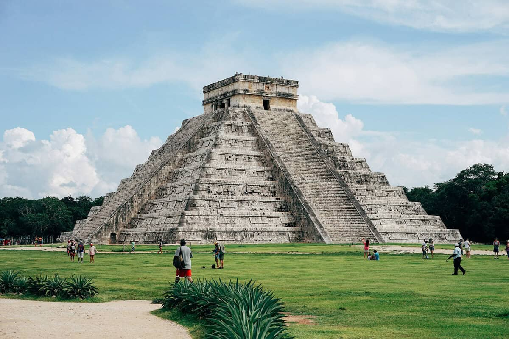
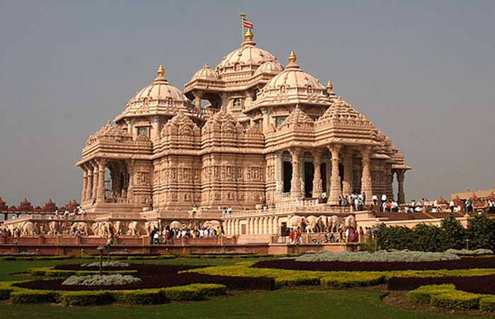

Ancient Roman architecture

The ancient Roman architecture adopted the external language of classical Greek architecture for the purposes of the ancient Romans. It grew so different from Greek buildings as to become a new style.

The ancient Roman architecture adopted the external language of classical Greek architecture for the purposes of the ancient Romans. It grew so different from Greek buildings as to become a new style.
The architecture of ancient Greece is the architecture produced by the Greek-speaking people whose culture flourished on the Greek mainland and in colonies in Anatolia.

Indian architecture is as old as the history of the civilization. The earliest remains of recognizable building activity in India date back to the Indus Valley cities.